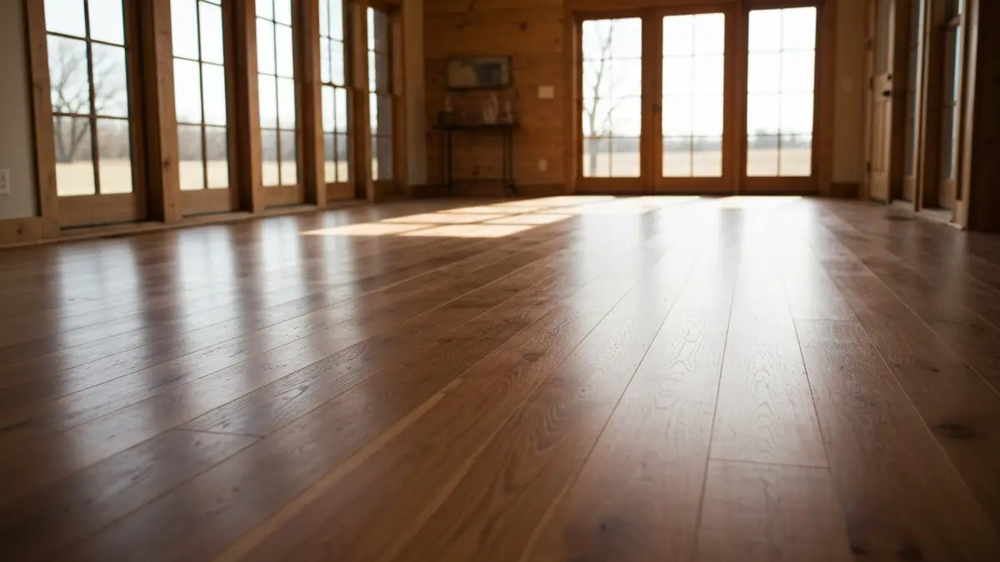

Hardwood Floor Refinishing in Waterloo & Tri-Lakes
Hardwood Floor Installation And Refinishing in Waterloo
Waterloo, with its proud heritage as a rural Douglas County farming community, boasts a unique housing stock, including many cherished older farmhouses. These homes often feature original wide-plank hardwood floors, a testament to their enduring character, but decades of life in a busy agricultural setting and Nebraska's varied climate take their toll. From the wear and tear of farm boots to moisture fluctuations, these authentic floors require specialized care. Elkhorn Hardwood understands the specific challenges and deep appreciation Waterloo residents have for their historic homes, providing expert installation and restoration that respects the original craftsmanship while ensuring durability for modern living. We bring new life to your floors, perfectly suited to Waterloo's distinctive charm and lifestyle.

Why Waterloo Residents Choose Elkhorn Hardwood
Elkhorn Hardwood is not just another service provider; we are your neighbors, deeply familiar with the nuances of Waterloo homes. Our proximity means quicker response times and an inherent understanding of the area's specific needs, whether it's dealing with the expansive soils common in rural Douglas County or sourcing materials that complement the rustic aesthetic of Waterloo's farmhouses. We pride ourselves on a reputation built on trust and exceptional craftsmanship right here in the Omaha/Elkhorn metro area, extending our reliable services directly to the heart of Waterloo.
Waterloo homeowners choose us because our expertise goes beyond typical flooring. We specialize in the meticulous restoration of original wide-plank hardwoods, a common feature in the area's older farmhouses. Our team employs advanced dust containment systems, crucial for minimizing disruption in active homes, and uses finishes designed to withstand the unique demands of rural living. From expert color matching for historic integrity to robust finishes for lasting beauty, we deliver solutions perfectly tailored to Waterloo’s distinctive homes and lifestyle.
Our Hardwood Floor Installation And Refinishing Services in Waterloo
- Hardwood Floor Refinishing: We meticulously restore the original wide-plank hardwood floors common in Waterloo's historic farmhouses, removing decades of wear, scratches, and discoloration. Our process rejuvenates your floors, bringing back their natural beauty and enhancing the authentic character of your Waterloo home while using durable finishes.
- New Hardwood Floor Installation: Whether you're adding hardwood to a new addition or replacing worn-out flooring in an older Waterloo property, we offer expert installation of a wide range of wood species. We consider Waterloo's climate and lifestyle, recommending durable and aesthetically appropriate options that stand the test of time and enhance your home's value.
- Hardwood Floor Repair: From moisture damage often found in older rural homes to dings and dents from everyday life in a farming community, our repair services address specific issues with precision. We expertly mend damaged boards, fill gaps, and ensure seamless transitions, restoring the structural integrity and appearance of your Waterloo floors.
- Dustless Sanding: Essential for minimizing mess and allergens, our state-of-the-art dustless sanding system is perfect for Waterloo homeowners concerned about indoor air quality during refinishing projects. This technology ensures a cleaner work environment and a superior finish, making the process less disruptive for your family and pets.
Serving Waterloo and Surrounding Areas
Waterloo, nestled in the picturesque rural landscape of Douglas County, presents a unique blend of quiet country living with convenient access to Omaha and Elkhorn, NE. Our services extend throughout this charming community, from the quaint downtown area along Main Street to the expansive properties stretching along County Road 156 and N 240th Street. We proudly serve residences near the scenic Platte River, homes around Waterloo Park, and the numerous farmhouses dotting the surrounding countryside. Whether you're located closer to Highway 92 or deeper within Waterloo's agricultural heartland, Elkhorn Hardwood is committed to delivering exceptional hardwood flooring services right to your doorstep, understanding the local geography and specific needs of each neighborhood.
Frequently Asked Questions About Hardwood Floor Installation And Refinishing in Waterloo

How much does hardwood floor installation and refinishing cost in Waterloo?
Costs for hardwood flooring in Waterloo homes vary based on the project's scope, the type of wood, and the extent of refinishing or installation needed. Given the mix of older, original wide-plank floors and some newer constructions, average costs in Waterloo typically range from $3-$8 per square foot for refinishing and $7-$15 per square foot for new installation, depending on material choice and complexity.
How long does hardwood floor installation and refinishing take for a typical Waterloo home?
For an average-sized Waterloo home (e.g., a living room and dining room in an older farmhouse), a complete hardwood floor refinishing project usually takes 3-5 days, including drying time. New installation timelines vary more depending on the square footage and subfloor preparation, often ranging from 4-8 days for multiple rooms.
Do you serve all of Waterloo?
Yes, Elkhorn Hardwood proudly serves all areas of Waterloo, NE. Our service extends from the downtown village core to the surrounding rural properties, including homes along the Platte River, near Waterloo Park, and properties situated on county roads like 156th Street and 240th Street. No matter your specific location within Waterloo, we are ready to assist you.
How do you handle the unique challenges of wide-plank original floors in Waterloo's older farmhouses?
We specialize in the restoration of wide-plank original floors, understanding their unique construction and historical value. Our process involves careful assessment of board integrity, expert sanding techniques to preserve wood thickness, and specialized filling for wider gaps common in older floors. We use period-appropriate stains and durable finishes designed to highlight their natural beauty while protecting them for years to come.
Ready to schedule your hardwood floor installation and refinishing service in Waterloo? Call us today or use the contact form above — we serve Waterloo and all surrounding areas of Omaha/Elkhorn, NE. Most Waterloo jobs are scheduled within 48-72 hours.